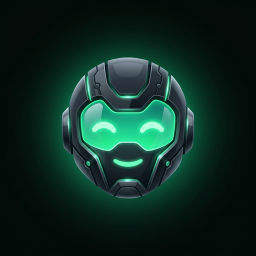

Kolu Bot
Çevrimiçi • %99.9 Uptime
Online • 99.9% Uptime
AYASCELL Discord sunucumuza ücretsiz olarak bot altyapısı sağlayan değerli destekçimiz. Sunucunuz için gelişmiş moderasyon, eğlence ve yönetim araçları sunarak düşük gecikme ve özelleştirilebilir yapısıyla topluluk deneyimini bir üst seviyeye taşır. Our generous partner providing free Discord bot infrastructure for the AYASCELL community server. Equipped with advanced moderation, entertainment commands, low latency, and customizable management tools to elevate server engagement.
Gelişmiş ModerasyonAdvanced Moderation
Eğlence KomutlarıFun Commands
Hızlı & GüvenilirFast & Reliable
ÖzelleştirilebilirCustomizable
Detaylı İstatistiklerDetailed Analytics
Çoklu Dil DesteğiMulti-Language